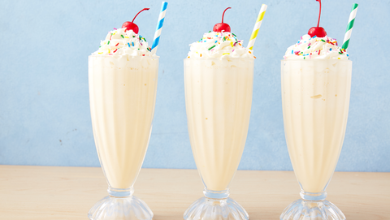

How to make Milkshake

Description:
The instructions on this page will make making a milkshake a breeze! Following this recipe will simply result in a delicious and creamy milkshake So now you can brag to all your friends that you can make a milkshake! Furthermore, this recipe uses easy to find and cheap materails/ingredients, also I forgot to mention that you will make this in a blender! So, what are you holding out for? Buckle up your seat and get ready to create a milkshake!
Materials/Ingredients:
- French Vanilla Ice-cream
- Milk(3% recommended for more sweetness, but you can use 2%)
- Straw
-
Big glass(Should be big enough to pour most of the milkshake or over 250ml) Example of the Glass(Buy here)
- Blender
- Whipped Cream
- Chocolate Syrup(Optional)
- Measuring Cup
- Measuring Spoons
- Bowls
- Vanilla Extract
Steps:
- Put 2/3 cups of frozen ice cream in a bowl. Then transfer into the blender.
- Then pour 1 cup of milk into your measuring cup.
- Then pour the milk from the cup into the blender(If you want a chocolate milkshake. Then pour a decent amout of chocolate syrup into the milk. After that you want to stir the milk with a spoon.)
- With your measuring spoon, pour 1 tsp on vanilla extract on the spoon. Then pour the exteact from the spoon in the blender
- Blend for at 10-30 seconds.
- Pour the mixture into your glass.
- Then top it with whipped cream, and then put choclate syrup on the whipped cream(Optional.)
- Poke your straw into the cup.
- Enjoy your milkshake!